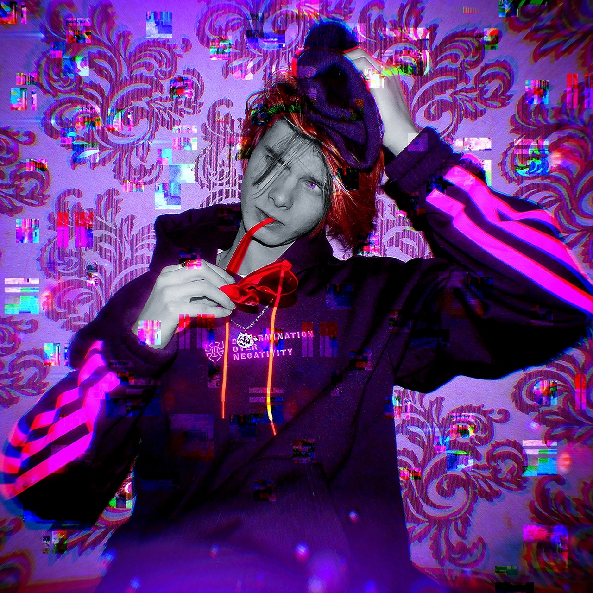
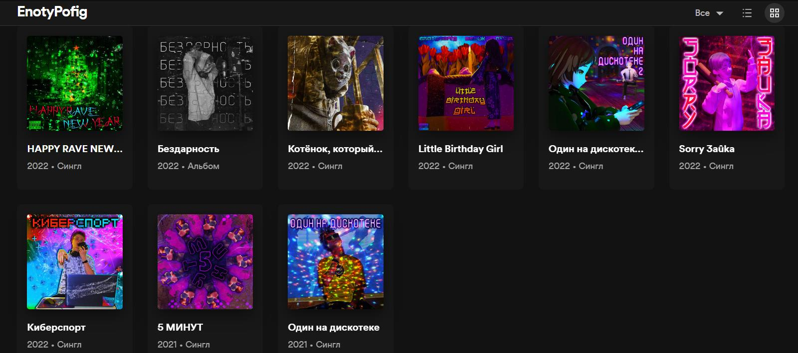

Илюша - Ученичок колледжа, учащийся в группе программистов (Не важно где и в какой). Он знает своё дело, ведь дело знает его. Знает как делать и дела делаются сами.
Его девиз: «Спасибо богу, что ещё живой».

Везде сущий. Везде имеющийся. Везде... Спасибо за этот текст блин^-^
Жизненные достижения Илюши:
EnotyPofig - Рейвер, репер, рокер, опера иронии и балета, метастёбы, да и просто хороший парень. Да, это всё кстати тот самый Илья, про которого вы уже прочитали информацию выше.
А вообще спасибо, что прочитали, мне действительно приятно, я хочу, чтоб у вас в жизни всё было хорошо, спасибо, что вы есть, я вами горжусь!
• 16 августа 2021 года на свет появляется кумир моложёжи «EnotyPofig»
• 26 августа 2021 года выходит первый трек «Один на дискотеке». Никто не ожидал такого от Илюши, но вот! Он появился так же неожидано, как и дождь в +30 градусов жары.
• 4 июля 2022 года начинается «Рофл-эпоха» от EnotyPofig'a, в которой он начал делать стёб-песенки. Эти рофл-треки передавали проблемы группы и Илья посвятил свои недопесенки таким лицам как: Марк ФриЧерноморик, Айман и её протест, Никита ака Капуста, Даша Тендерлибай.
• 17 октября 2022 года у Enotypofig'a появляется личный водитель на Оке. Всеми любимый мальчик-краш, покоритель женских сердец, да и просто дамский угодник - Станислав!
• 30 сентября 2022 года EnotyPofig начинает подтягивать всех своих на треки и ровно за 1 день до октября появляется легендарный сайфер, легендарый BoysBand состоящий из: Илья, Станислава и мальчика Никиты.
• 29 декабря 2022 года выходит первый альбом «Бездарнось». И после этого альбома начинается новая эра EnotyPofig'a.
Если вы ещё не слышали это имя, то могу вас огорчить... Вы читаете о EnotyPofig'e уже минут 5. Спасибо, что вы есть!

Почта для деловых таких:
enotypofig@gmail.com
Музыкальные площадки: